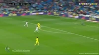

Javi Mata: La tiene Ferran, puede hacer un pase para atras y lo hace sin ninguna dificultad, le llega el balon a su compañero, puede tirar!!
Javi Mata: La para Keylor Navas, pero le cae el rebote a Ferran, que puede tirar!!!!
GOOOOOOOOOOOOOOOOOL
Javi Mata: Madre miaaaaa, como cojio esa pelota y de primera le metio un sombrerito para hacer un simple golazo con el que ganan el partido!!!!!!!